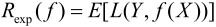

＝{c1，c2,…,cK}。输入为特征向量x∊x，输出为类标记（class label）y∊。X是定义在输入空间x上的随机向量，Y是定义在输出空间上的随机变量。P(X,Y)是X和Y的联合概率分布。训练数据集
＝{c1，c2,…,cK}。输入为特征向量x∊x，输出为类标记（class label）y∊。X是定义在输入空间x上的随机向量，Y是定义在输出空间上的随机变量。P(X,Y)是X和Y的联合概率分布。训练数据集第4章 朴素贝叶斯法
朴素贝叶斯（naïve Bayes）法是基于贝叶斯定理与特征条件独立假设的分类方法[1]。对于给定的训练数据集，首先基于特征条件独立假设学习输入/输出的联合概率分布；然后基于此模型，对给定的输入x，利用贝叶斯定理求出后验概率最大的输出y。朴素贝叶斯法实现简单，学习与预测的效率都很高，是一种常用的方法。
本章叙述朴素贝叶斯法，包括朴素贝叶斯法的学习与分类、朴素贝叶斯法的参数估计算法。
4.1 朴素贝叶斯法的学习与分类
4.1.1 基本方法
设输入空间x⊆Rn为n维向量的集合，输出空间为类标记集合＝{c1，c2,…,cK}。输入为特征向量x∊x，输出为类标记（class label）y∊。X是定义在输入空间x上的随机向量，Y是定义在输出空间上的随机变量。P(X,Y)是X和Y的联合概率分布。训练数据集
由P(X,Y)独立同分布产生。
朴素贝叶斯法通过训练数据集学习联合概率分布P(X,Y)。具体地，学习以下先验概率分布及条件概率分布。先验概率分布
条件概率分布
于是学习到联合概率分布P(X,Y)。
条件概率分布P(X＝x|Y＝ck)有指数级数量的参数，其估计实际是不可行的。事实上，假设x(j)可取值有Sj个，j＝1,2,…,n，Y可取值有K个，那么参数个数为。
朴素贝叶斯法对条件概率分布作了条件独立性的假设。由于这是一个较强的假设，朴素贝叶斯法也由此得名。具体地，条件独立性假设是

朴素贝叶斯法实际上学习到生成数据的机制，所以属于生成模型。条件独立假设等于是说用于分类的特征在类确定的条件下都是条件独立的。这一假设使朴素贝叶斯法变得简单，但有时会牺牲一定的分类准确率。
朴素贝叶斯法分类时，对给定的输入x，通过学习到的模型计算后验概率分布P(Y＝ck|X＝x)，将后验概率最大的类作为x的类输出。后验概率计算根据贝叶斯定理进行：
将式（4.3）代入式（4.4）有
这是朴素贝叶斯法分类的基本公式。于是，朴素贝叶斯分类器可表示为
注意到，在式（4.6）中分母对所有Ck都是相同的，所以，
4.1.2 后验概率最大化的含义
朴素贝叶斯法将实例分到后验概率最大的类中。这等价于期望风险最小化。假设选择0-1损失函数：
式中f(X)是分类决策函数。这时，期望风险函数为

期望是对联合分布P(X,Y)取的。由此取条件期望
为了使期望风险最小化，只需对Xx＝逐个极小化，由此得到：
这样一来，根据期望风险最小化准则就得到了后验概率最大化准则：
即朴素贝叶斯法所采用的原理。
4.2 朴素贝叶斯法的参数估计
4.2.1 极大似然估计
在朴素贝叶斯法中，学习意味着估计P(Y＝ck)和P(X(j)＝x(j)|Y＝ck)。可以应用极大似然估计法估计相应的概率。先验概率P(Y＝ck)的极大似然估计是
设第j个特征x(j)可能取值的集合为{aj1,aj2,…,ajSj}，条件概率P(x(j)＝ajl|Y＝ck)的极大似然估计是
式中，是第i个样本的第j个特征；ajl是第j个特征可能取的第l个值；I为指示函数。
4.2.2 学习与分类算法
下面给出朴素贝叶斯法的学习与分类算法。
算法4.1（朴素贝叶斯算法（naïve Bayes algorithm））
输入：训练数据T＝{(x1，y1),(x2,y2),…,(xN,yN)}，其中，是第i个样本的第j个特征，∊{aj1,aj2,…,ajSj}，ajl是第j个特征可能取的第l个值，j＝1,2,…,n，l＝1,2,…,Sj，yi∊{c1，c2,…,cK}；实例x；
输出：实例x的分类。
（1）计算先验概率及条件概率
（2）对于给定的实例x＝(x(1),x(2),…,x(n))T，计算
（3）确定实例x的类
例4.1 试由表4.1的训练数据学习一个朴素贝叶斯分类器并确定x＝(2,S)T的类标记y。表中X(1)，X(2)为特征，取值的集合分别为A1＝{1,2,3}，A2＝{S，M,L}，Y为类标记，Y∊C＝{1,-1}。
表4.1 训练数据
解 根据算法4.1，由表4.1，容易计算下列概率：
对于给定的x＝(2,S)T计算：
因为P(Y＝-1)P(X(1)＝2|Y＝-1)P(X(2)＝S|Y＝-1)最大，所以y＝-1。
4.2.3 贝叶斯估计
用极大似然估计可能会出现所要估计的概率值为0的情况。这时会影响到后验概率的计算结果，使分类产生偏差。解决这一问题的方法是采用贝叶斯估计。具体地，条件概率的贝叶斯估计是
式中 ≥0。等价于在随机变量各个取值的频数上赋予一个正数>0。当＝0时就是极大似然估计。常取＝1，这时称为拉普拉斯平滑（Laplace smoothing）。显然，对任何l＝1,2,…,Sj，K＝1,2,…,K，有
≥0。等价于在随机变量各个取值的频数上赋予一个正数>0。当＝0时就是极大似然估计。常取＝1，这时称为拉普拉斯平滑（Laplace smoothing）。显然，对任何l＝1,2,…,Sj，K＝1,2,…,K，有
表明式（4.10）确为一种概率分布。同样，先验概率的贝叶斯估计是
例4.2 问题同例4.1，按照拉普拉斯平滑估计概率，即取＝1。
解 A1＝{1,2,3}，A2＝{S,M,L}，C＝{1,-1}。按照式（4.10）和式（4.11）计算下列概率：
对于给定的x＝(2,S)T计算：
由于P(Y＝-1)P(X(1)＝2|Y＝-1)P(X(2)＝S|Y＝-1)最大，所以y＝-1。
本章概要
1．朴素贝叶斯法是典型的生成学习方法。生成方法由训练数据学习联合概率分布P(X,Y)，然后求得后验概率分布P(Y|X)。具体来说，利用训练数据学习P(X|Y)和P(Y)的估计，得到联合概率分布：
P(X,Y)＝P(Y)P(X|Y)
概率估计方法可以是极大似然估计或贝叶斯估计：
2．朴素贝叶斯法的基本假设是条件独立性，
这是一个较强的假设。由于这一假设，模型包含的条件概率的数量大为减少，朴素贝叶斯法的学习与预测大为简化。因而朴素贝叶斯法高效，且易于实现。其缺点是分类的性能不一定很高。
3．朴素贝叶斯法利用贝叶斯定理与学到的联合概率模型进行分类预测。
将输入x分到后验概率最大的类y。
后验概率最大等价于0-1损失函数时的期望风险最小化。
继续阅读
朴素贝叶斯法的介绍可见文献[1,2]。朴素贝叶斯法中假设输入变量都是条件独立的，如果假设它们之间存在概率依存关系，模型就变成了贝叶斯网络，参见文献[3]。
习题
4.1 用极大似然估计法推出朴素贝叶斯法中的概率估计公式（4.8）及公式（4.9）。
4.2 用贝叶斯估计法推出朴素贝叶斯法中的概率估计公式（4.10）及公式（4.11）。
参考文献
[1] Mitchell TM. Chapter 1: Generative and discriminative classifiers: Naïve Bayes and logistic regression. In: Machine Learning. Draft,2005. http://www.cs.cmu.edu/~tom/mlbook/NBayeslogReg.pdf
[2] Hastie T,Tibshirani R,Friedman J. The Elements of Statistical Learning. Data Mining,Inference,and Prediction. Springer-Verlag,2001（中译本：统计学习基础——数据挖掘、推理与预测。范明，柴玉梅，昝红英等译。北京：电子工业出版社，2004）
[3] Bishop C. Pattern Recognition and Machine Learning,Springer,2006
注释
[1] 注意：朴素贝叶斯法与贝叶斯估计（Bayesian estimation）是不同的概念。